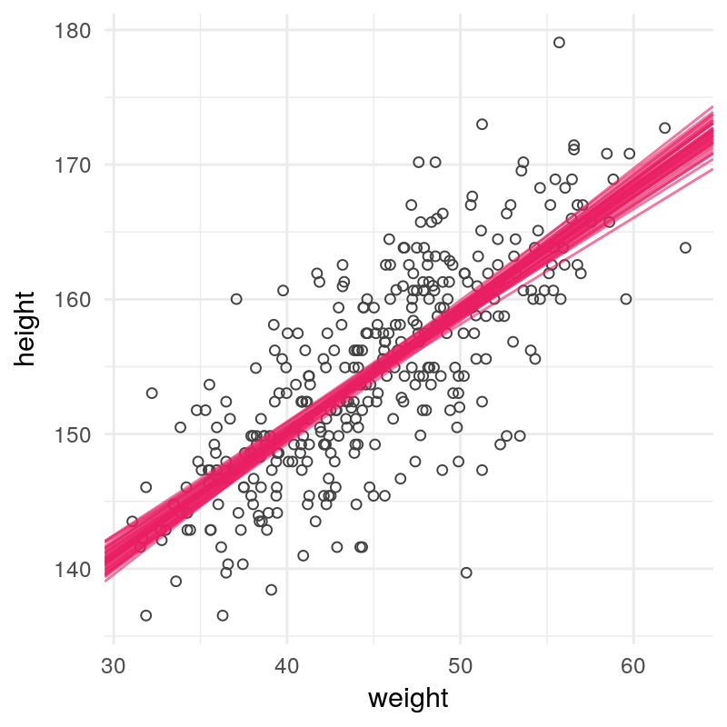
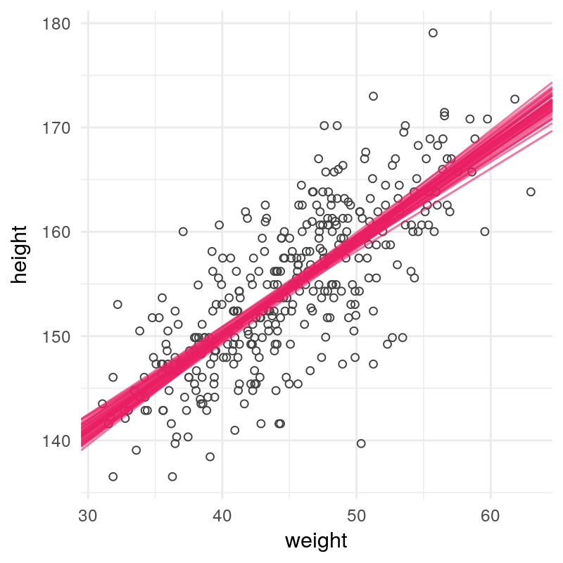

Workshop: Einführung in Stan und rstan
Philipp Gewessler
Inhalte des Workshops
theoretischer Teil
- Grundlagen bayesianischer Inferenz
- Stan Grundlagen
- Schnittstelle von R und Stan: rstan
- Erstes Anwendungsbeispiel
Inhalte des Workshops
praktischer Teil
- [Übung 01] Normalverteilungsmodell
- [Übung 02] einfache lineare Regression
- [Übung 03] multiple lineare Regression
- [Übung 04] logistische Regression
- [Übung 05] hierarchische lineare Modelle
Bayesianische Inferenz
Bayesianischer Wahrscheinlichkeitsbegriff

Generalisierung von Logik auf unsichere Ereignisse
Wahrscheinlichkeit als Plausibilität (= Information) über Ereignisse
Bayes Theorem
Berechnung der Posterior $p(\boldsymbol{\theta}|\boldsymbol{y},I)$ gegebenPrior $p(\boldsymbol{\theta}|I)$ und Likelihood $p(\boldsymbol{y}|\boldsymbol{\theta},I)$
$p(\boldsymbol{\theta}|\boldsymbol{y},I) = \frac{p(\boldsymbol{\theta}|I)p(\boldsymbol{y}|\boldsymbol{\theta},I)}{p(\boldsymbol{y})}$
Berechnung der Posterior
- Analytisch
- Grid Approximation
- Quadratische Approximation
- Markov Chain Monte Carlo
Markov Chain Monte Carlo

Stan Grundlagen
Was ist Stan?
- probabilistische Programmiersprache
- Berechnung bayesianischer Modelle via MCMC (HMC)
- basiert auf C++ (schnell!)


Stan Workflow
- Modell spezifizieren
- Modell kompilieren
- Modell fitten
- Modelldiagnose
- Analyse der Posterior | Ergebnisinterpretation
Erforderliche Code Blöcke
data {
// Hier sind die übergebenen Daten zu deklarieren
}
parameters {
// Hier sind die Modellparameter zu deklarieren
}
model {
// Hier sind das Modell (inkl. Priors) zu definieren
}
Optionale Code Blöcke
transformed data {
// Definitionen von transformierten Daten
}
transformed parameters {
// Definition von Parametertransformationen
}
generated quantities {
// Zusätzlich berechnete Variablen
}
Variablentypen [1|2]
Typen müssen in Stan immer deklariert werden!
// primitive types
int N;
real p;
// vector | matrix types
vector[M] x;
row_vector[N] y;
matrix[M,N] z;
Variablentypen [2|2]
// array types
real p[20];
matrix[3,3] a[2,5];
// constrained types
int<lower=1> N;
real<upper=0> log_p;
real<lower=0,upper=1> p;
Von R nach Stan
Ein Stan Modell berechnen
# Stan laden
library(rstan)
# Multithreading aktivieren
rstan_options(auto_write = TRUE)
options(mc.cores = parallel::detectCores())
# Datenaufbereitung und Modellberechnung
stan_data <- list(...)
stan_model <- stan_model("Mein_Modell.stan")
stan_fit <- sampling(object = stan_model, data = stan_data)
print(stan_fit)
Ein triviales Beispiel
Münzwurf
Inhaltliche Überlegungen
$p(\theta|\boldsymbol{y},I) \propto p(\theta|I)p(\boldsymbol{y}|\theta,I)$
$y_i|\theta,I \sim \mathrm{Bernoulli(\theta)} \quad i = 1, \ldots, N$
$\theta|I \sim \mathrm{Uniform}(0,1)$
Definieren des Stan Programmes
data {
int<lower=1> N;
int<lower=0,upper=1> y[N];
}
parameters {
real<lower=0,upper=1> theta;
}
model {
for (i in 1:N)
y[i] ~ bernoulli(theta);
}
Übung 01
Normalverteilungsmodell mit unbekanntem Mittelwert und unbekannter Varianz
- [R] Generiere 100 Zufallszahlen aus einer Normalverteilung mit beliebigem $\mu$ und $\sigma$.
- [Stan] Erstelle ein Stan Programm (nv.stan), das sowohl den Erwartungswert $\mu$, als auch die Standardabweichung $\sigma$ schätzt.
- [R, rstan] Schätze das Modell und sieh dir die Parameterschätzungen an. Sind die wahren Parameter in den Posterior Intervallen enthalten?
- [R, rstan] Generiere Daten aus der gleichen Verteilung wie in 1. jedoch mit N >> 100 und N << 100. Wie ändert sich die Posterior Verteilung für $\mu$ und $\sigma$?
- [Stan] Zusatz: Formuliere das Modell in vektorisierter Form. Welche Änderungen am Programm sind notwendig?
Übung 01
Neue Funktionen
// einfache Form
real x ~ normal(real mu, real sigma)
// vektorisierte Form
vector x ~ normal(vector mu, real sigma) // oder
vector x ~ normal(real[] mu, real sigma) // oder
real[] x ~ normal(vector mu, real sigma) // oder
real[] x ~ normal(real[] mu, real sigma)
einfachelineare Regression
Inhaltliche Überlegungen
$y_i \sim \mathrm{Normal}(\mu_i, \sigma)$
$\mu_i = \alpha + x_i\beta$
$(\alpha, \beta, \sigma) \sim \ldots$
Wahl der Priors
InterceptsIm Allgemeinen wenig a priori Information, daher Verteilung mit großer Varianz
Regressionskoeffizientenzentriert, mit geringer Wahrscheinlichkeitsmasse für 'extreme' Werte
Residualvarianz Je nach Kontext leicht regularisierend
Wahl des Priors für $\beta$
'Least Squares'
$\mathrm{Uniform}(-\infty, \infty)$

Wahl des Priors für $\beta$
'Ridge Regression'
$\mathrm{Normal}(0, \lambda)$

Wahl des Priors für $\beta$
'LASSO Regression'
$\mathrm{Laplace}(0, \lambda)$

Anwendungsbeispiel
Zusammenhang von Größe und Gewicht der !Kung


Übung 02
einfache lineare Regression
Führe mit dem Datensatz heights.csv folgende Analysen durch:
- [R] Schätze die Regression von weight auf height mit OLS.
- [Stan] Programmiere die lineare Regression in Stan und verwende eine Gleichverteilung für $\beta$ und $\sigma$. Unterscheidet sich die Lösung von der OLS-Schätzung? Wenn ja, wie?
- [Stan] Wie 2. nur mit normalverteiltem Prior für $\alpha$ und $\beta$. Wähle verschiedene Varianzen für die Prior Verteilung von $\alpha$ bzw. $\beta$. Welche Auswirkungen hat die Wahl der Prior Varianz auf die Posterior?
- [rstan, R] Extrahiere die posterior samples für $\alpha$ und $\beta$. Stelle die Posterior auf 2 Arten dar:
- klassisch in Form eines Konfidenzbandes,
- durch posterior samples von Parameterkombinationen
Übung 02 (Beispiel 4)
Neue Funktionen
rstan::extract()
 

multiplelineare Regression
Inhaltliche Überlegungen
$y_i \sim \mathrm{Normal}(\mu_i, \sigma)$
$\mu_i = \beta_0 + x_{i1}\beta_1 + x_{i2}\beta_2 + \ldots + x_{ik}\beta_k, \quad$ oder
$\boldsymbol{\mu} = \boldsymbol{X\beta}$
$(\boldsymbol{\beta}, \sigma) \sim \ldots$
Anwendungsbeispiel
polynomiale Regression

Übung 03 (A)
multiple lineare Regression
Führe mit dem Datensatz heights2.csv folgende Analysen durch:
- [Stan, rstan, R] Erstelle ein Stan Programm, dass eine polynomiale Regression 2. bzw. 3. Ordnung von weight auf height schätzt. Definiere dazu erst einen transformierten Parameter $\mu_i = \beta_0 + x_{i}\beta_1 + x_{i}^2\beta_2 (+ x_i^3\beta_3)$
- [R, Stan] Generalisiere das Modell, indem du es in vektorisierter Form programmierst. Wie muss das Modell und die Datenstruktur angepasst werden, damit lineare Modelle mit beliebiger Anzahl von Prädiktoren geschätzt werden können?
- [rstan, R] Stelle die Unsicherheit der Regressionsparameter wie in Übung 02 mit Hilfe der posterior samples dar.
Übung 03 (A)
Neue Funktionen
# 1.
transformed parameters {}
# 2.
model.matrix(formula = ..., data = ...)
poly(..., degree = ...)
Darstellung von Unsicherheit
Neben Unsicherheiten der Parameter ist man häufig an der Unsicherheit für neue Beobachtungen interessiert (Prädiktionsintervalle)
Im bayesianischen Kontext durch Simulationen aus der posterior predictive distribution (PPD) möglich
$p(\tilde{y}|\boldsymbol{y},I) = \int_{\theta \in \Theta} p(\tilde{y}|\theta,I)p(\theta|\boldsymbol{y},I) d\theta$
Simulation der PPD
lineare Regression
- Ziehen der Parameter $(\boldsymbol{\beta}^{(i)}, \sigma^{(i)})$ aus der Posterior, $i = 1, \ldots, K$ der Index der MCMC-Iteration
- simuliere $\tilde{\boldsymbol{y}}|\boldsymbol{\beta}^{(i)}, \sigma^{(i)} \sim \mathrm{Normal}(\tilde{\boldsymbol{X}}\boldsymbol{\beta}^{(i)}, \sigma^{(i)})$
Posterior vs. PPD
Modell: Übung 02


Übung 03 (B)
Posterior Predictions
- [R]Simuliere die posterior predictive distribution für eine Person mit beliebigem Gewicht. Verwende dazu die posterior samples aus Übung 03 (A).
- [R] Definiere eine neue Variable $\tilde{\boldsymbol{x}}$ der Länge $\tilde{N}$ = 200, die den gesamten Wertebereich von weight abdeckt.
- [Stan] Adaptiere das Modell aus Übung 03 (A) so, dass für $\tilde{N}$ neue Personen mit Gewicht $\tilde{x}_i$ neue Werte $\tilde{y}_i$ aus der posterior predictive distribution simuliert werden. Berechne dann das Modell neu.
- [rstan, R] Stelle die PPD in Form eines Konfidenzbandes dar. Worin unterscheidet sich die Grafik zur Darstellung in Übung 02 4. (2)?
Übung 03 (B)
Neue Funktionen
# 1.
rnorm(n, mu, sigma)
# 2.
seq(min, max, length.out)
# 3.
generated quantities {}
real x = normal_rng(real mu, real sigma)